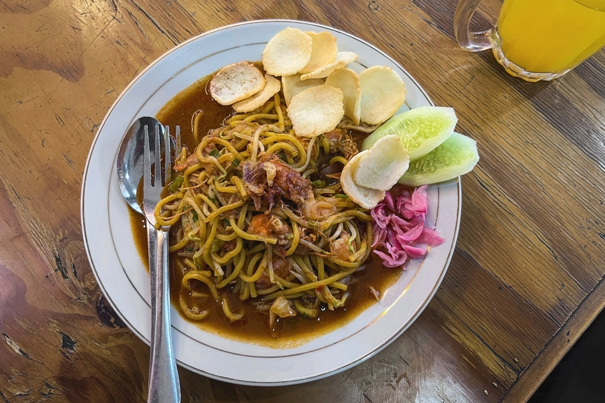
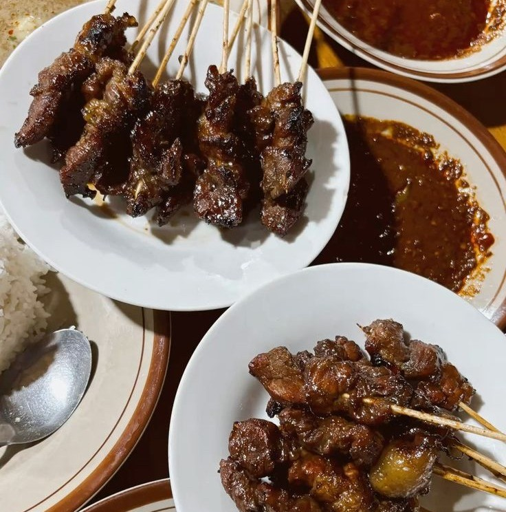
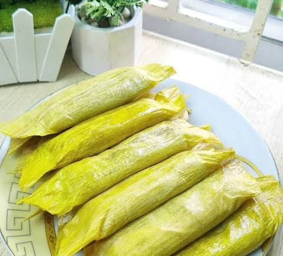

1. Mie Aceh

Mie kuning tebal dimasak dengan bumbu rempah pekat. Tersedia dalam versi goreng, tumis, atau berkuah, dengan pilihan daging sapi, kambing, atau seafood.
Kaya rempah, kuat rasa
Perpaduan rempah Nusantara yang kuat dan melahirkan cita rasa otentik sejati dari ujung barat Indonesia

Mie kuning tebal dimasak dengan bumbu rempah pekat. Tersedia dalam versi goreng, tumis, atau berkuah, dengan pilihan daging sapi, kambing, atau seafood.

Gulai sayur khas Aceh dengan bumbu pliek u, yaitu ampas kelapa fermentasi, yang memberi aroma dan rasa gurih yang khas.

Ayam goreng renyah yang disajikan dengan gorengan daun pandan, daun temurui, dan cabai hijau sehingga aromanya harum.

Sate khas daerah Matang, Kabupaten Bireuen, yang disajikan dengan kuah kacang kental dan nasi.

Kue tradisional dari tepung ketan dan pisang yang dibungkus daun pisang, sering hadir saat hari raya dan acara adat.
Budaya ngopi sangat kuat di Aceh. Warung kopi bukan hanya tempat minum kopi, tetapi juga tempat berdiskusi dan bersosialisasi.
| Nama | Jenis | Bahan Utama | Cita Rasa |
|---|---|---|---|
| Mie Aceh | Makanan utama | Mie, daging/seafood, rempah | Pedas dan gurih |
| Kuah Pliek U | Makanan utama | Sayuran, pliek u, kelapa | Gurih dan asam |
| Ayam Tangkap | Lauk | Ayam, daun pandan, daun temurui | Gurih dan harum |
| Sate Matang | Lauk/sate | Daging sapi/kambing, kuah kacang | Gurih dan berempah |
| Timphan | Snack | Tepung ketan, pisang, srikaya | Manis |
| Sanger | Minuman | Kopi, susu kental manis | Manis dan creamy |